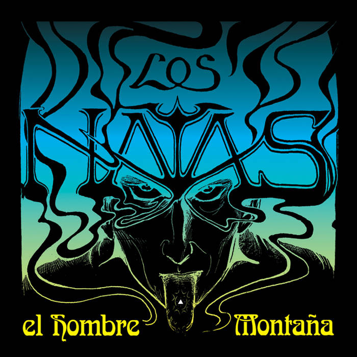

Los Natas fue una banda argentina de stoner metal, formada en Buenos Aires en 1994. En sus últimos lanzamientos se alejaron de este género apoyándose en un sonido más experimental, que ellos han llamado Free Rock (Rock libre). La última formación de la banda incluyó a Walter Broide (batería y coros), Sergio Chotsourian (voz y guitarra) y Gonzalo Villagra (bajo). Decidieron separarse en 2012.

Los Natas fue formada en 1994 en la ciudad de Buenos Aires, por Sergio Chotsourian (voz y guitarra), Walter Broide (batería y coros) y Miguel Fernández (bajo), luego de una primera formación como cuarteto que incluía al cantante Diego Porras. En 1996, graban su primer álbum, Delmar, publicado en forma independiente en una pequeña edición en casete. Este trabajo recién sería editado y distribuido en CD dos años después, con dos temas extra, por el mítico sello estadounidense Man's Ruin Records de San Francisco, apoyados por el dueño del sello, Frank Kozic.
Sus influencias musicales son numerosas, teniendo como base el sonido crudo y psicodélico de bandas de los 70's como The Doors, Black Sabbath, The Who, Pink Floyd, entre otras, y también de la banda pionera del desert rock, Kyuss. A raíz de eso, Los Natas proponen un sonido con fuerte presencia de equipamiento valvular e instrumentos vintage. Su música se caracteriza por constantes cambios a la largo de una canción, y por largas improvisaciones, que varían en cada interpretación.